Мудборд · шаг 1 из 6
ЦВЕТ ФИЛЬМА
Пять вариантов покраски на трёх наших кадрах: ванная с двумя зеркалами, коридор, волк. Кадры одни и те же, меняется только цвет. Выбираем один вариант на весь фильм, он станет законом для всех локаций, существа и превращения.
Как утверждаем: Куаныш и Алия смотрят и отвечают одной буквой: A, B, C, D или E. Если нужен вариант между двумя, пишем так: «B, но темнее, как D». После ответа цвет фиксируется в каноне и больше не обсуждается на каждом кадре.
AСТАЛЬ
Сине-стальная тень, серо-зелёный свет. Это цвет коридора, который понравился режиссёру.
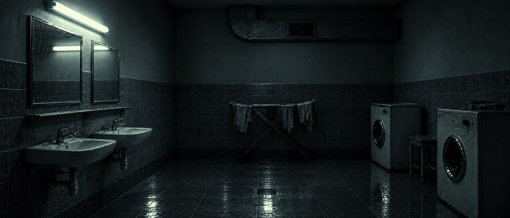
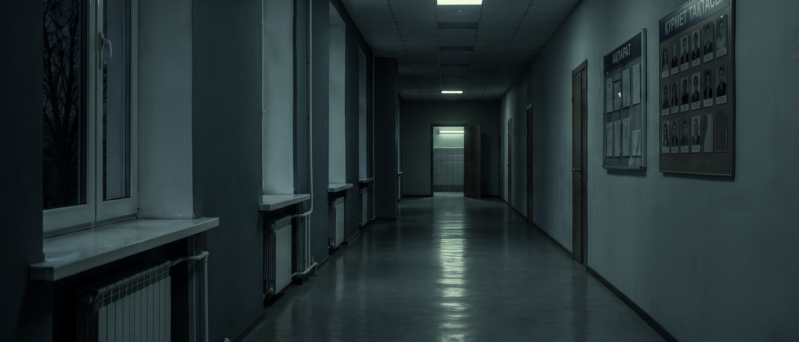
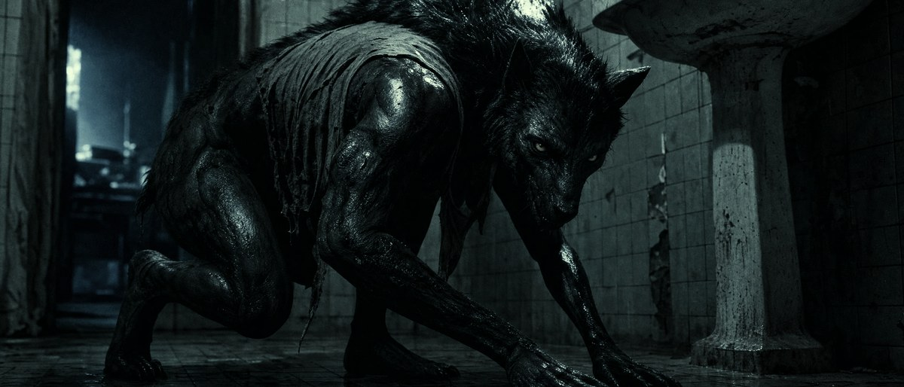
тень
средний
свет
глаза
Читается как холодная казённая ночь. Кожа волка на этом фоне самая чёрная.
BФЛУОРЕСЦЕНТ
Бирюзово-зелёная лампа, мокрые блики, больше «больничного» зелёного.
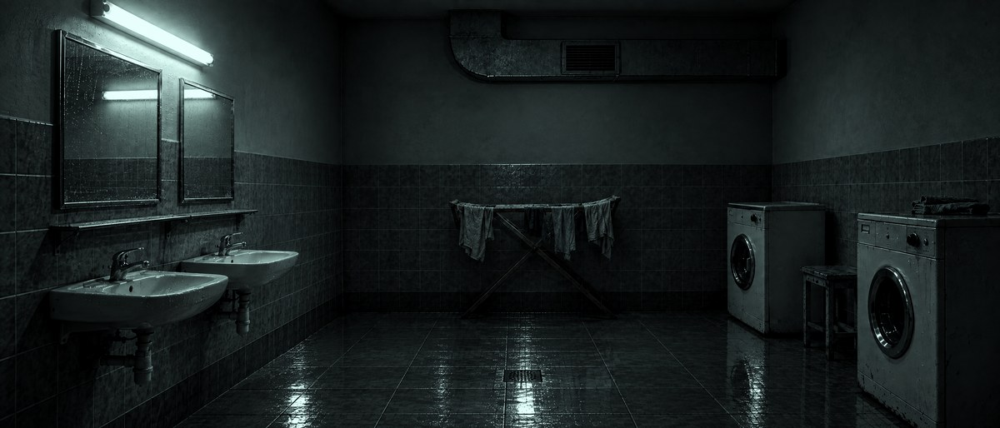
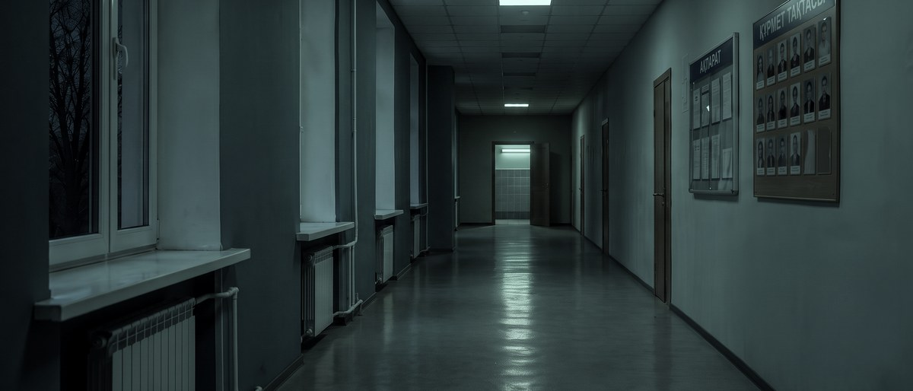
тень
средний
свет
глаза
Больше мистики. Жёлтые глаза на нём горят сильнее всего.
CПЕПЕЛ
Почти монохром, серо-зелёный, цвет почти выключен.
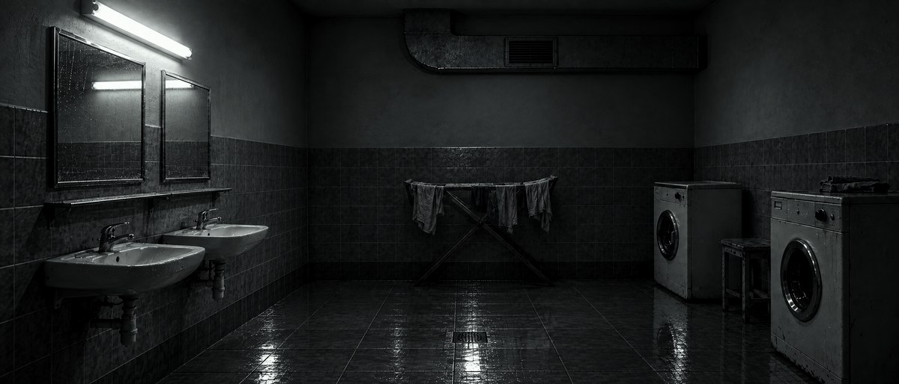
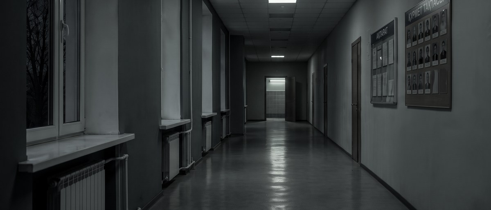
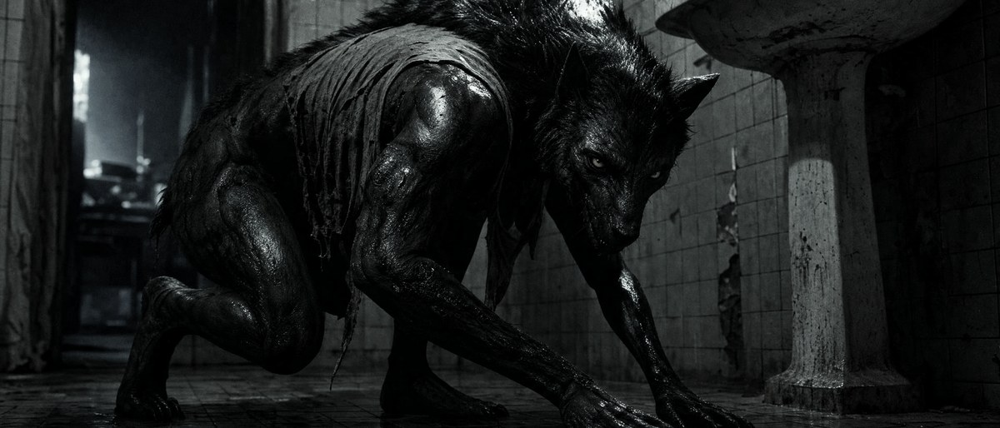
тень
средний
свет
глаза
Документальная сухость, кровь и глаза становятся единственным цветом в кадре.
DНОЧЬ
Сине-чёрный, глубже и холоднее всех, лунный.
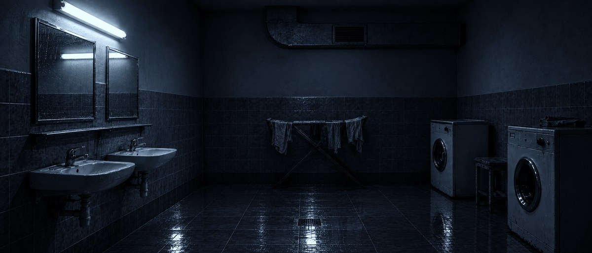
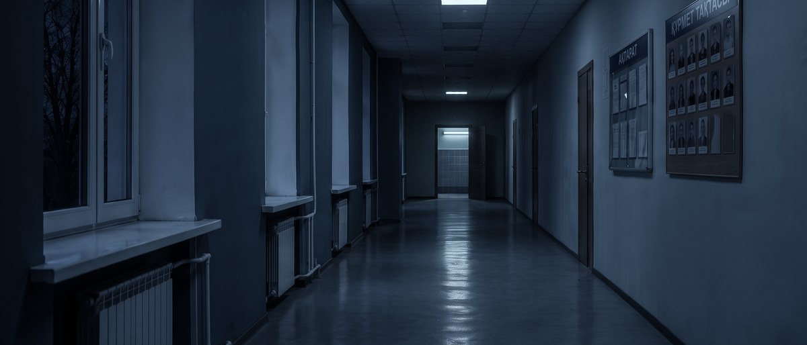
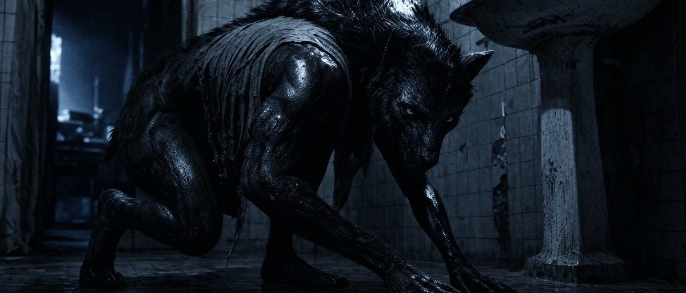
тень
средний
свет
глаза
Самый «кинотеатральный» и самый тёмный. Риск: в коридоре с луной синева может спорить с лампой.
EВЫБОР КУАНЫША
Цвет, который выбрали режиссёр и сценарист по кадру с ногами (25.09). Почти монохром: холодная сталь с едва заметной синевой, без зелёного, чёрные задавлены, свет только на лампе и мокрых бликах.

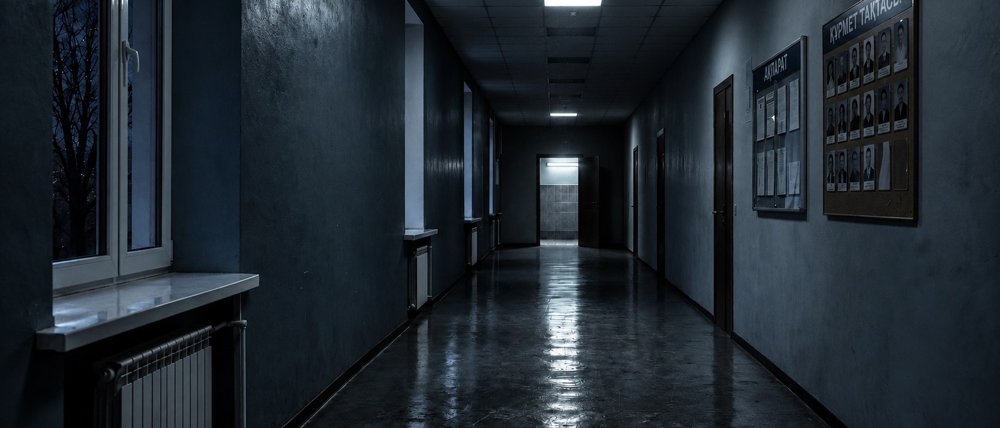
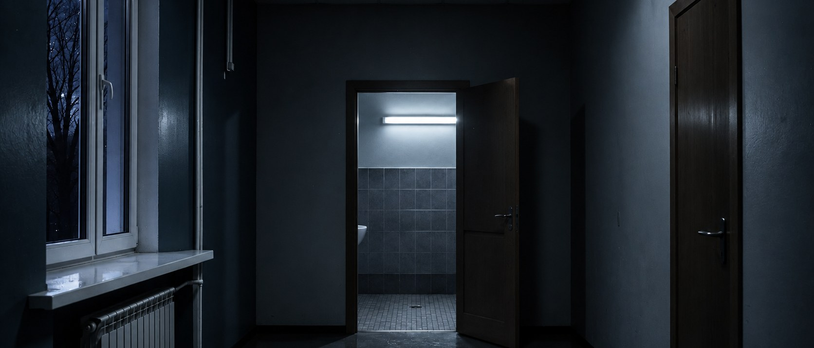
тень
средний
свет
глаза
Первый кадр — эталон Куаныша, коридор и дверь покрашены под него. Тени глубокие, свет только от ламп и мокрых бликов, зелёного нет.
Taurus Asia Production · Neyra Vision Studio · AI-превиз — Colibri Studio · 23.09.2026